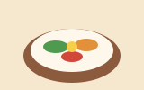

14단원 · 종합 연습 · 01~12단원
아래가 완성된 모습입니다. 각 단계의 답과 해설은
이 파일을 VS Code 로 열면 <style> 안과 각 단계 주석에 있습니다.
답이 달라도 결과가 같으면 맞은 것입니다.
완성된 메뉴판
── 단계 목록 ──
단계 1 — 가게 머리글을 만듭니다 (HTML)
단계 2 — 카테고리 띠와 메뉴 카드 여섯 장을 만듭니다 (HTML)
단계 3 — 세트 표 · 안내 목록 · 바닥글을 만듭니다 (HTML)
단계 4 — 머리글에 색과 글자 모양을 줍니다
단계 5 — 카테고리 띠를 가로 한 줄로 만듭니다
단계 6 — 카드 한 장의 모양을 만듭니다
단계 7 — 카드를 가로로 나란히 놓고 줄바꿈시킵니다
단계 8 — 카드 안을 세로 컨테이너로 만들어 가격을 바닥에 붙입니다
단계 9 — [도전] 이름과 가격을 양끝으로 보내고 인기 배지를 답니다
단계 10 — [도전] 세트 표와 바닥글을 다듬습니다